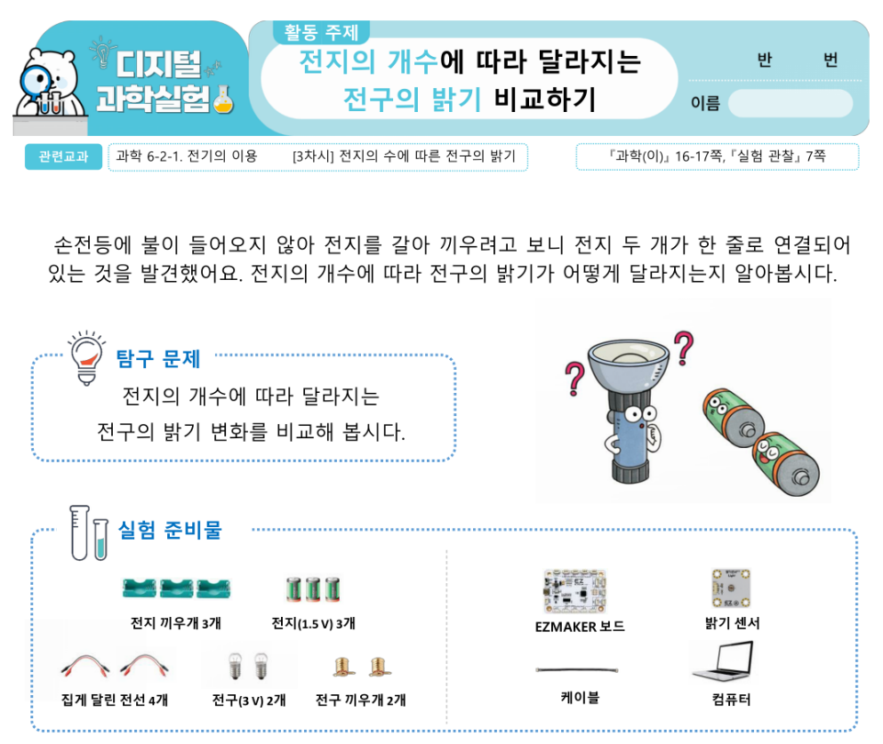

이지메이커 데이터 대시보드
| 순번 | 시각 |
|---|
최근 데이터
(센서1)
0
| 항목 | 수집 갯수 | 최근 | 평균 | 최대 | 최소 |
|---|
실험보고서
실제 실험 모습 (사진 등)
실험 데이터 및 그래프
실험 그래프의 보고서 삽입 버튼을 누르면 실험 결과 그래프가 삽입됩니다.
실험 결과 해석
텍스트 입력 영역
알게 된 사실 및 결론
텍스트 입력 영역
| 순번 | 시각 |
|---|
| 항목 | 수집 갯수 | 최근 | 평균 | 최대 | 최소 |
|---|